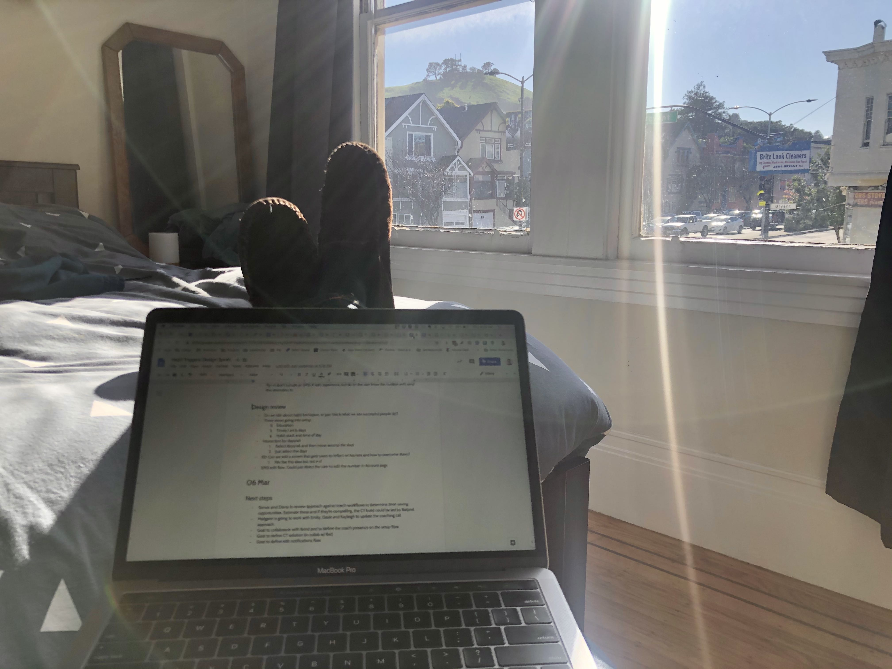
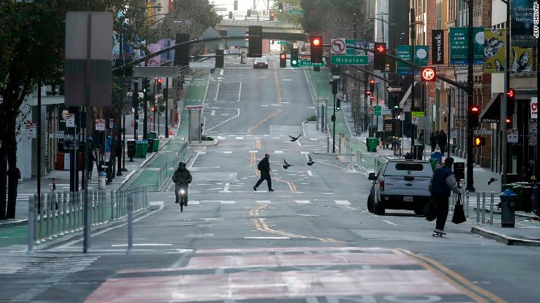
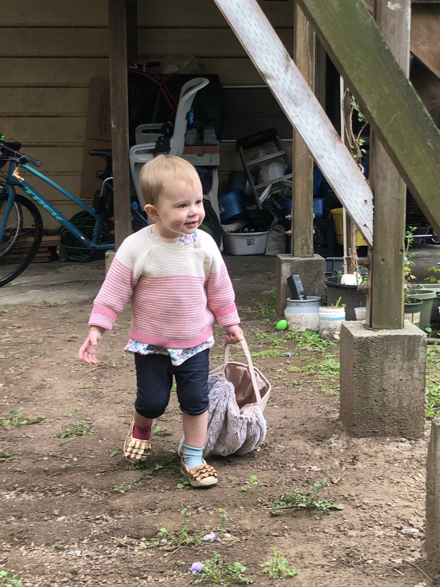
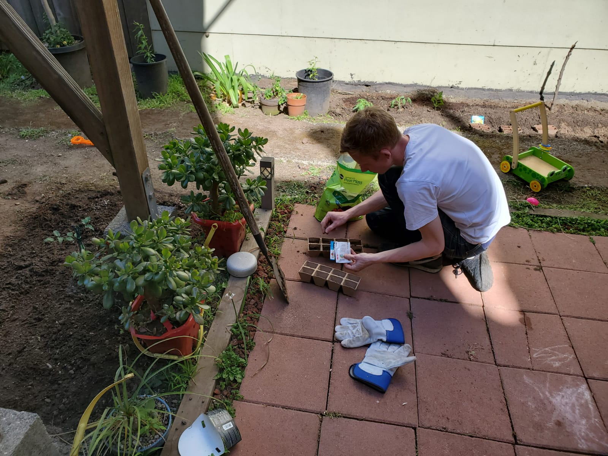
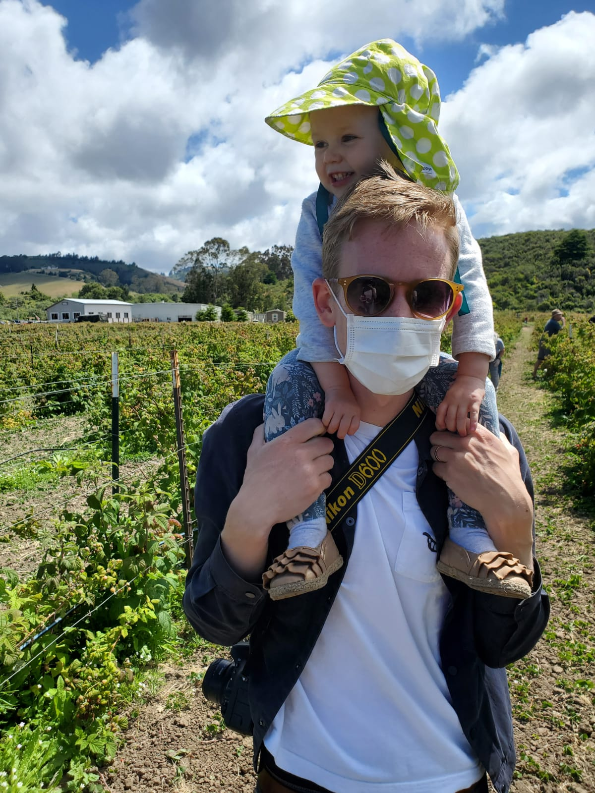

In the early days of the pandemic I decided to track case count. It felt pretty novel at the time, before most media outlets created COVID tracker web pages. In early March South Korea had the most cases and Italy was starting to grow rapidly. Case counts in other countries were comparitively very low.
In hindsight this analysis, and that by others, was fairly meaningless. Testing was at such low levels at this point in the pandemic that case counts were being massively underreported, particularly in Europe. Instead, reported case counts were just a function of how well established country's testing infrasture was. A more useful metric turned out to be the positivity rate of tests.
I wanted to see how similar the growth rate of #COVID19 is between countries. Italy just passed South Korea's cases per population but the trajectory is starkly different. pic.twitter.com/jYuvAXEDGW
— Simon Hunter (@SimonHunter28) March 11, 2020
With cases starting to grow in California, Hinge Health decides to move to work from home, following larger technology companies, such as Twitter. With Alma's day care still open this was no major inconvenience.
On March 17 San Francisco mandates "shelter in place". This was the first of such measures in the US, despite recorded cases being a fraction of what was being experienced in New York and Washington. By March 17 5000 cases of covid-19 and 100 deaths had been reported in the US. In reality it's likely that 10's of thousands of people were infected at this point.
 LinkOn March 23 the UK implements a complete lockdown for the first time amid rapidly rising cases and deaths.
The Government's statementWhen Boris Johnson catches me going for my 5th jog pic.twitter.com/03lf3gkfu8
— Chunkz (@Chunkz) March 23, 2020
By April mask-wearing was becoming the social norm in San Francisco, despite no rules mandating it at this time. Masks were initially pretty hard to get hold of and people were collecting spares to give to healthcare workers who also had a shortage of protective equipment. This was well in advance of masks becoming normalized in the UK. Here I'm wearing an N95 mask we had saved for the aftermath of a possible earthquake.
Last weekend wore a mask to the grocery store and felt like it was a bit much. This weekend forgot the mask and it felt like the most reckless thing I've done since deciding to have a child.
— Simon Hunter (@SimonHunter28) April 12, 2020
An easter egg hunt amid the dried earth and weeds of our back yard.
One month after the UK institutes lockdown, the mortality rate peaks. At this point in the pandemic, roughly 1000 people were dying of Covid every day in the UK, and the UK's mortality rate had become one of the highest in the world.
A month into lockdown and being confined to the same small apartment and patch of dirt behind the house I decide to start a garden. I made a trip to Lowes and bought tomato plants, a chili plant and seeds for flowers and other vegeatable. The endeavour was broadly futile; the seedlings were eaten by undiscovered pests as soon as they germinated. Only the tomato plants did well, and even they didn't ripen before we left the US.
For our sanity, though strictly against the rules, we got a car and headed out of the city and down the coast to Pescadero. Here we spent the day picking berries, eating tacos and hanging out on the beach.
